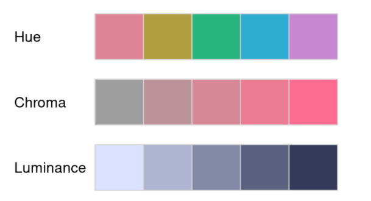
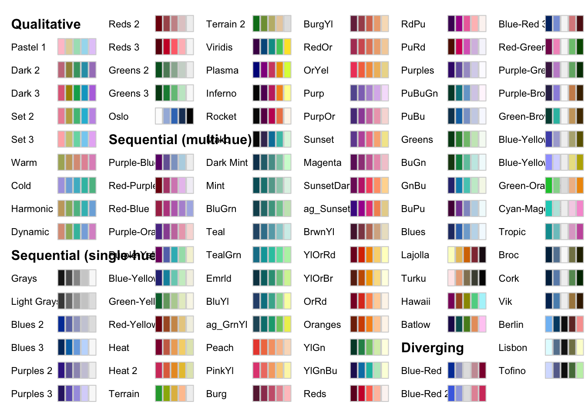
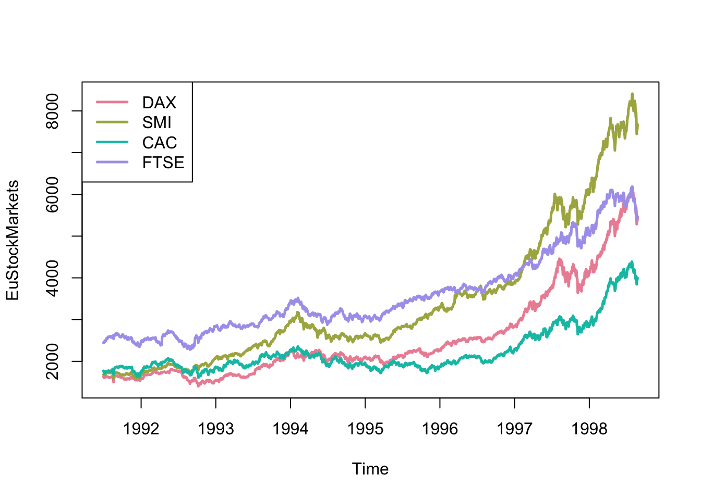
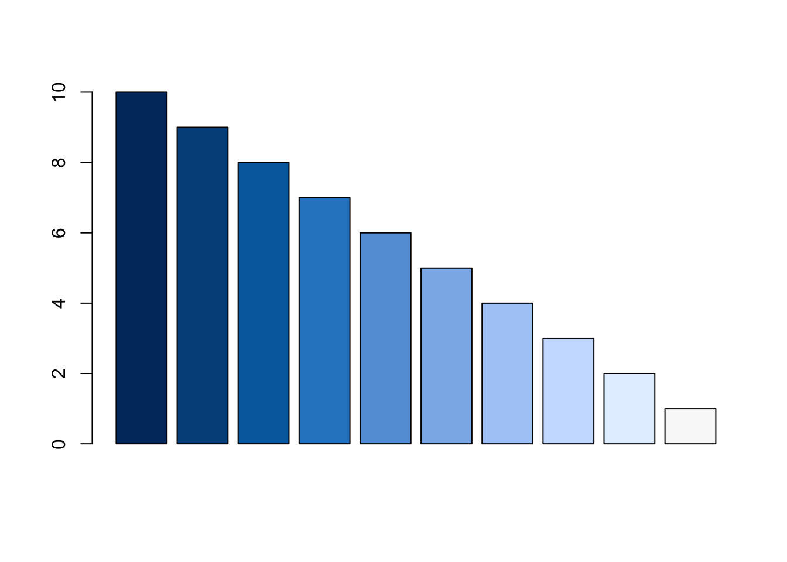
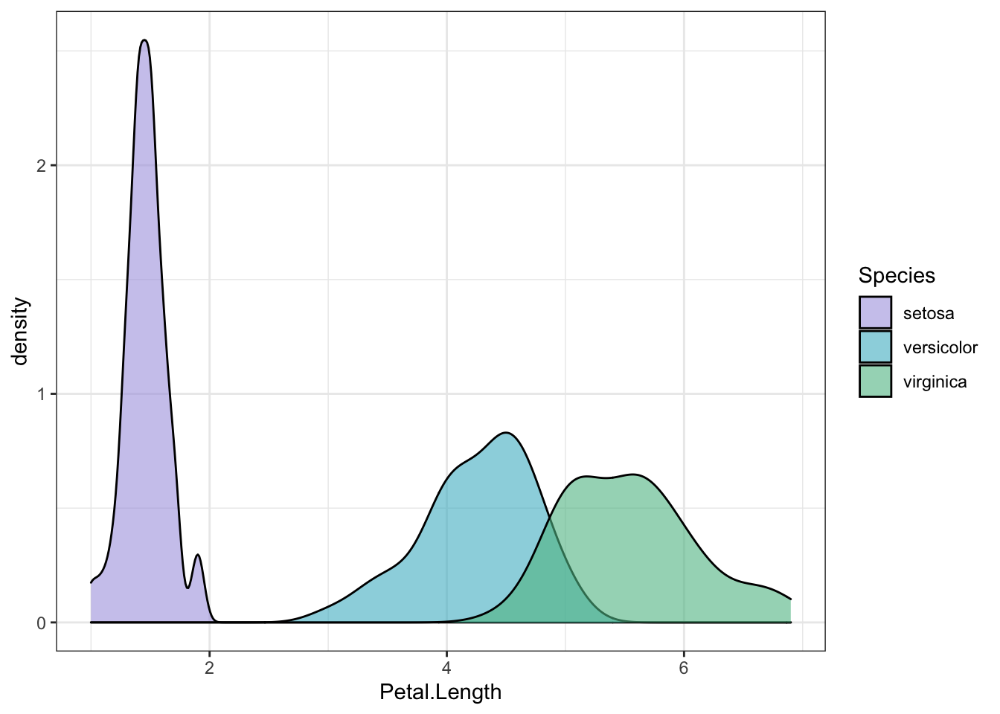
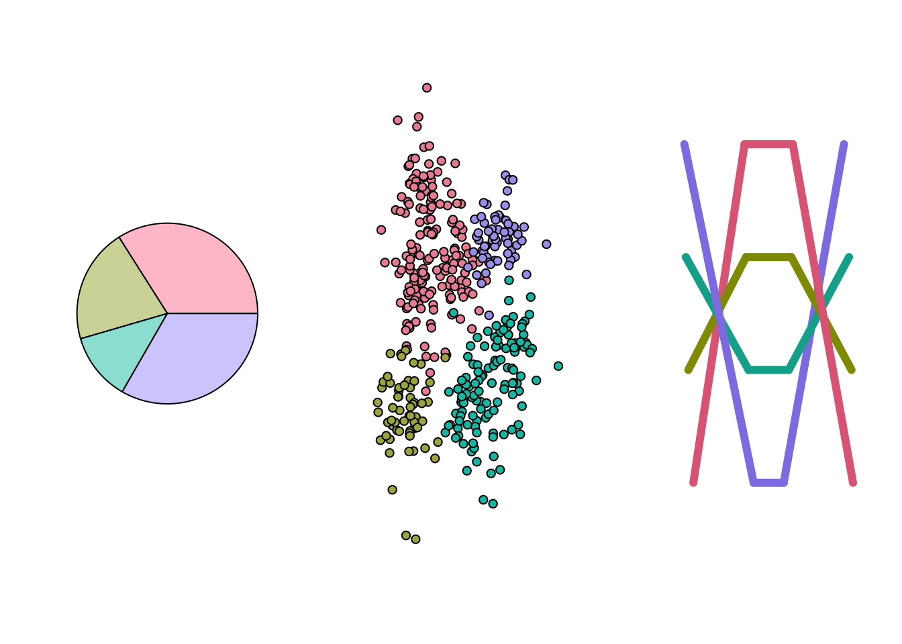
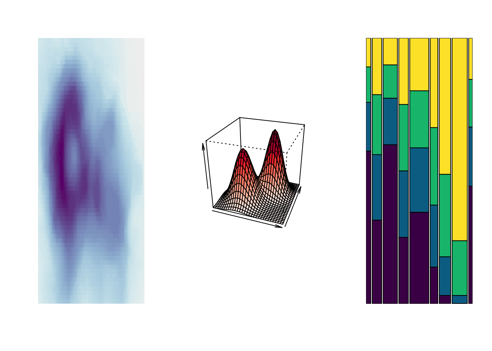
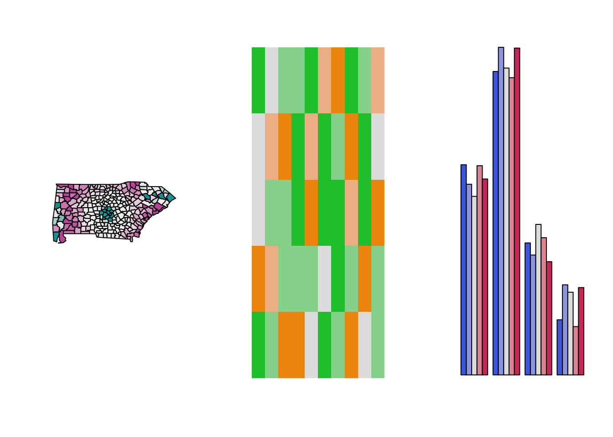
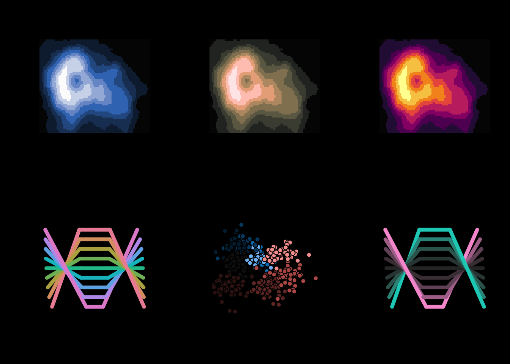

第 11 章 colorspace包
介绍一个强大的R包{colorspace}，可用于选择颜色和调色板，修饰和创建自己想要的颜色，以及将颜色恰当地应用到各种作图中。
此R包中色彩空间(color space)的构建是基于一种名为HCL (Hue-Chroma-Luminance)的色彩系统。
其中，H (Hue)指的是颜色类型；C (Chroma)指的是彩度；L (Luminance)指的是颜色的亮度(下文中就用H、C、L分别指代上述单词)。
定义干巴巴的且有点抽象，下图可助于理解：  ## 含有的颜色与调色板
library("colorspace")## 查看包中已存在的颜色与调色板
hcl_palettes(plot = TRUE)
## 查看包中已存在的颜色名字
hcl_palettes()
## HCL palettes
##
## Type: Qualitative
## Names: Pastel 1, Dark 2, Dark 3, Set 2, Set 3, Warm, Cold, Harmonic, Dynamic
##
## Type: Sequential (single-hue)
## Names: Grays, Light Grays, Blues 2, Blues 3, Purples 2, Purples 3, Reds 2,
## Reds 3, Greens 2, Greens 3, Oslo
##
## Type: Sequential (multi-hue)
## Names: Purple-Blue, Red-Purple, Red-Blue, Purple-Orange, Purple-Yellow,
## Blue-Yellow, Green-Yellow, Red-Yellow, Heat, Heat 2, Terrain,
## Terrain 2, Viridis, Plasma, Inferno, Rocket, Mako, Dark Mint,
## Mint, BluGrn, Teal, TealGrn, Emrld, BluYl, ag_GrnYl, Peach,
## PinkYl, Burg, BurgYl, RedOr, OrYel, Purp, PurpOr, Sunset,
## Magenta, SunsetDark, ag_Sunset, BrwnYl, YlOrRd, YlOrBr, OrRd,
## Oranges, YlGn, YlGnBu, Reds, RdPu, PuRd, Purples, PuBuGn, PuBu,
## Greens, BuGn, GnBu, BuPu, Blues, Lajolla, Turku, Hawaii, Batlow
##
## Type: Diverging
## Names: Blue-Red, Blue-Red 2, Blue-Red 3, Red-Green, Purple-Green,
## Purple-Brown, Green-Brown, Blue-Yellow 2, Blue-Yellow 3,
## Green-Orange, Cyan-Magenta, Tropic, Broc, Cork, Vik, Berlin,
## Lisbon, Tofinocolorspace包含三大类调色板：
A. Qualitative（定性的）： 通常用于含有不同组别的数据，并且组别之间没有等级关系。函数为：qualitative_hcl()
B. Sequential（连续的）： 用于等级或数值关系，比如，由低到高的数据。函数为：sequential_hcl()
C. Diverging（分散的）： 用于有等级或数值关系，含有一个中间值，分别往两边延伸的数据。函数为：diverging_hcl()
11.1 提取颜色
color4 <- qualitative_hcl(4, palette = "Set 2") # 4个颜色，“Set 2”调色板
color4
## [1] "#ED90A4" "#ABB150" "#00C1B2" "#ACA2EC"11.1.1 plot配色
plot(EuStockMarkets, plot.type = "single", col = color4, lwd = 2.5)
legend("topleft", colnames(EuStockMarkets), col = color4, lwd = 2.5, bty = "o") 
11.1.2 barplot配色
barplot(10:1, col = sequential_hcl(10, palette = "Blues 3"))
从上述代码可知，sequential_hcl()所提取的颜色可以直接传递到R基础作图中的”col”（颜色）中。
11.1.3 ggplot2配色
应用到{ggplot2}中，使用规则可以归纳成下方代码：
scale_
根据作图的目的，选择适当的函数，之后就可以轻易的调配颜色。下面举一个例子：
library("ggplot2")
ggplot(iris, aes(x = Petal.Length, fill = Species)) +
geom_density(alpha = 0.6) +
theme_bw() +
scale_fill_discrete_qualitative(palette = "Cold")
11.3 不同图配色
- Qualitative（定性的）
par(mfrow = c(1, 3)) # 使图片可放置的位置变成1行3列
demoplot(qualitative_hcl(4, "Pastel 1"), type = "pie")
demoplot(qualitative_hcl(4, "Set 2"), type = "scatter")
demoplot(qualitative_hcl(4, "Dark 3"), type = "lines") - Sequential（连续的）
par(mfrow = c(1, 3))
demoplot(sequential_hcl(99, "Purple-Blue"), type = "heatmap")
demoplot(sequential_hcl(99, "Reds"), type = "perspective")
demoplot(sequential_hcl(4, "Viridis"), type = "spine")
- Diverging（分散的）:
par(mfrow = c(1, 3))
demoplot(diverging_hcl(99, "Tropic", power = 2.5), type = "map")
demoplot(diverging_hcl(5, "Green-Orange"), type = "mosaic")
demoplot(diverging_hcl(5, "Blue-Red 2"), type = "bar")
## 上面的情况都属于白色（透明）背景的，如果变成黑色炫酷的背景呢
par(mfrow = c(2, 3), bg = "black")
demoplot(sequential_hcl(9, "Oslo"), "heatmap")
demoplot(sequential_hcl(9, "Turku"), "heatmap")
demoplot(sequential_hcl(9, "Inferno", rev = TRUE), "heatmap")
demoplot(qualitative_hcl(9, "Set 2"), "lines")
demoplot(diverging_hcl(9, "Berlin"), "scatter")
demoplot(diverging_hcl(9, "Cyan-Magenta", l2 = 20), "lines")